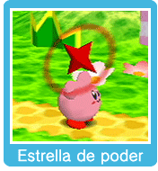

Puedes copiar las habilidades de ciertos enemigos (los que tienen poderes especiales) si oprimes para aspirarlos y hacia abajo para tragarlos. También puedes mezclar dos habilidades especiales para que Kirby pueda usar una combinación de ambas habilidades.
Cómo utilizar las habilidades copiadas
Oprime para usar una habilidad copiada.
Combinaciones de habilidades
Puedes obtener una combinación de tres formas: Aspirando a dos enemigos con habilidades especiales a la vez. Aspirando a un enemigo con una habilidad especial y expulsándolo encima de otro enemigo con habilidad especial. Aparecerá una estrella que representará una combinación de ambas habilidades. Aspira y traga la estrella para poder utilizar la combinación. Si lanzas a un enemigo contra otro, también conseguirás una combinación de habilidades. Lanza una estrella de poder a un enemigo que tenga una habilidad especial y aspira y traga la estrella con combinación de habilidades para poder utilizarlas.

Estrellas de poder
Estas estrellas son la fuente de los poderes de algunos enemigos. Si recibes daño tras copiar una habilidad, algunas veces perderás la habilidad copiada y aparecerá en forma de estrella de poder. Si aspiras esa estrella podrás recuperar la habilidad copiada. Ten cuidado, ya que si lanzas una estrella de poder y no alcanzas a un enemigo, no serás capaz de recuperarla.


 Puedes copiar las habilidades de ciertos enemigos (los que tienen poderes especiales) si oprimes
Puedes copiar las habilidades de ciertos enemigos (los que tienen poderes especiales) si oprimes  para aspirarlos y
para aspirarlos y  hacia abajo para tragarlos. También puedes mezclar dos habilidades especiales para que Kirby pueda usar una combinación de ambas habilidades.
hacia abajo para tragarlos. También puedes mezclar dos habilidades especiales para que Kirby pueda usar una combinación de ambas habilidades.
 Cómo utilizar las habilidades copiadas
Cómo utilizar las habilidades copiadas